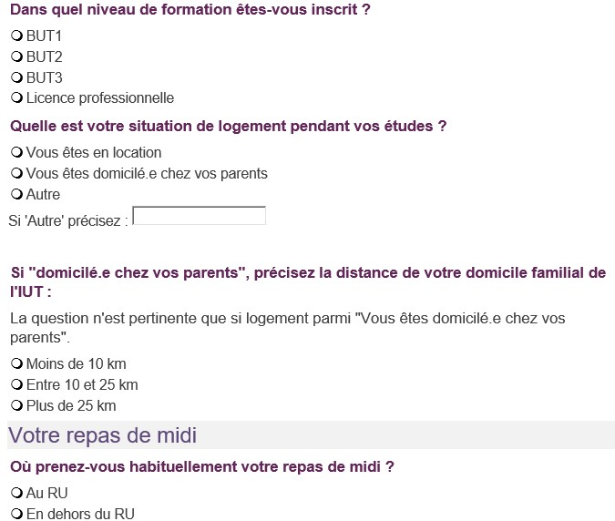
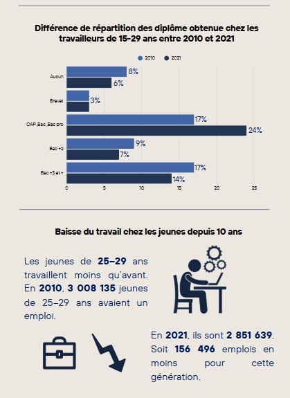
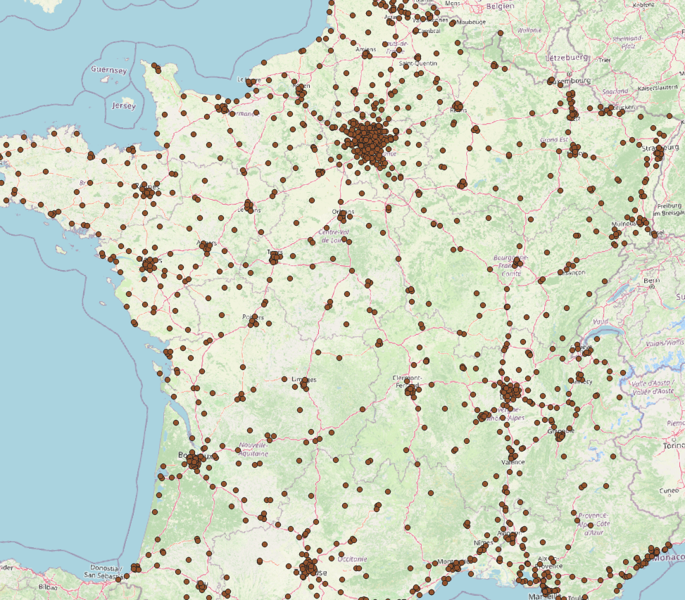
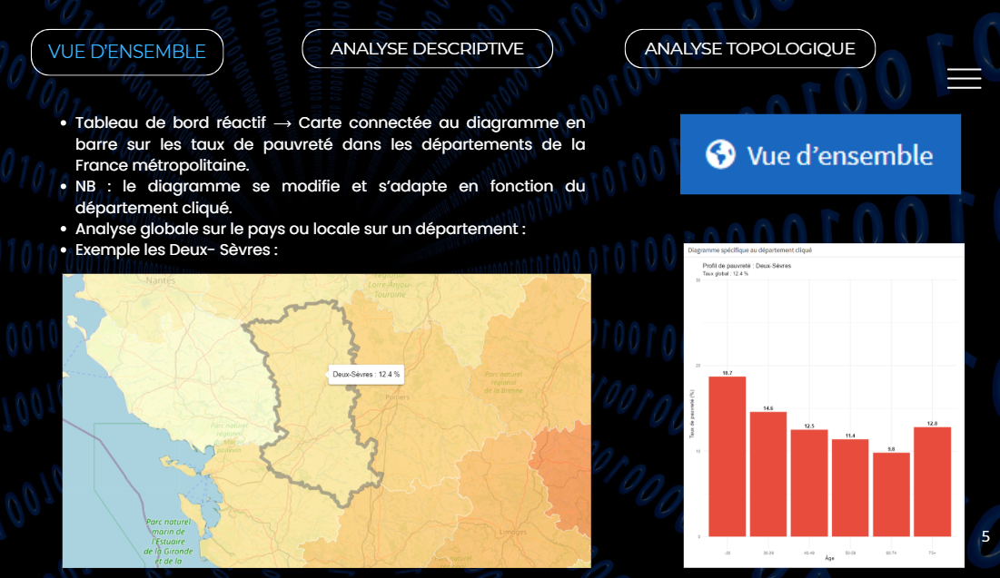
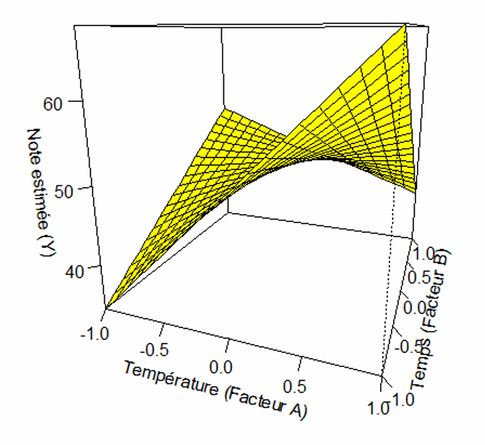
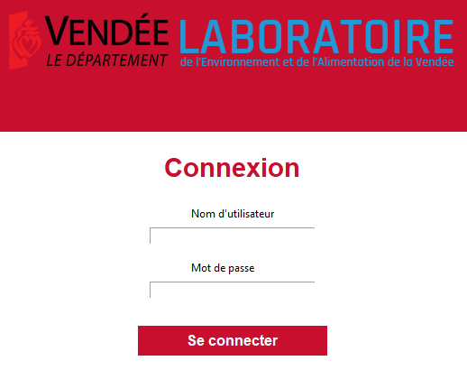

Mes projets universitaires
Projets de Première Année
Création d'un reporting EXCEL/VBA

Développement d’un tableau Excel interactif permettant la saisie, la modification et le suivi des notes par compétence et par semestre, avec tableaux de bord dynamiques, graphiques, décision de jury automatisée et usage du VBA pour les traitements complexes.
Gestion de fichiers PYTHON

Réalisation d’un script Python permettant de convertir un fichier JSON d’événements parisiens en fichier CSV structuré, lisible sous Excel, avec extraction, formatage des données et respect des bonnes pratiques de codage.
Enquête

Enquête visant à regrouper, analyser et sélectionner les données d’une enquête pour produire une synthèse claire, un tableau de bord visuel et un compte rendu mettant en valeur les résultats les plus pertinents.
Création de graphique avec R

Ce projet consiste à explorer les données Parcoursup 2023 et 2024 à travers un thème choisi, en réalisant six graphiques variés avec ggplot pour illustrer des tendances descriptives. Chaque graphique met en évidence une information chiffrée claire à partir de variables sélectionnées et nettoyées.
Régression sur R

Création d’un modèle prédictif en R, sans bibliothèques externes, pour estimer le prix de vente de biens immobiliers dans les Deux-Sèvres à partir de données 2023-2024, avec analyse exploratoire, modélisation personnalisée et évaluation des performances.
Conception, implémentation d'une base de donnée

Conception et implémentation d’une base de données MySQL pour la coopérative de sel de l’île de Ré, avec modélisation MCD/MLD, importation automatisée des données via Python, requêtes SQL pertinentes, et interface graphique en Tkinter pour la gestion des stocks, ventes et analyses.
Statistiques inférentielles grâce à R

Ce projet, réalisé avec R, vise à estimer la population d'une région française par sondages (aléatoire simple et stratifié) et à analyser les liens entre la pratique sportive et d'autres variables chez les étudiants. Il combine des techniques d'échantillonnage, d'inférence statistique et de tests d'indépendance sur données réelles.
Challenge datavisualisation

À partir de données Excel sur la scolarisation des 15-29 ans, ce projet consistait à définir une problématique pertinente, analyser les données (en les enrichissant si nécessaire), puis concevoir une infographie claire et visuelle en une page. L’objectif était de valoriser efficacement les résultats pour un public cible, en soignant à la fois le fond et la forme.
Projets de Deuxième Année
Analyse de données spatial (SIG)

En binôme, nous avons travaillé sur un projet consistant à créer des cartes à partir de données géographiques de restaurants McDonald's. Pour cela, nous avons utilisé le logiciel QGIS, qui permet de réaliser à la fois des calculs spatiaux et de la visualisation cartographique. Ce projet a été ma première opportunité de manipuler des données géographiques ; cette nouveauté s'est révélée particulièrement stimulante et a diversifié mon approche de l'analyse de données.
Reporting d'analyse multivariées

L’objectif de ce projet était d'appliquer un algorithme d’apprentissage non supervisé à des données du territoire français. En groupe, nous avons utilisé le langage R pour implémenter la méthode des K-means, avant de concevoir une application web interactive avec R Shiny pour la visualisation des résultats. Ce projet a été une excellente opportunité de lier la modélisation statistique avancée au développement d'outils décisionnels visuels.
Plan d'experience

L’objectif de ce projet était d'optimiser un résultat en ajustant différents paramètres. Pour illustrer cette démarche, nous avons travaillé sur l'optimisation d'une recette de cookies en faisant varier des facteurs tels que la température, le temps de cuisson ou la proportion des ingrédients. À l'aide du logiciel R, nous avons conçu et analysé des plans d’expériences afin de déterminer scientifiquement la configuration optimale pour obtenir le meilleur résultat.
Gestion de tournée de véhicules

Mené en parallèle de nos cours, ce projet s'est basé sur des données réelles fournies par un laboratoire de Vendée. Notre objectif était de concevoir une application dédiée à la gestion de leur flotte de véhicules. Pour ce faire, nous avons entièrement développé la solution sous Python, de la phase de nettoyage et de préparation des données jusqu'à la création de l'interface utilisateur graphique avec Tkinter.